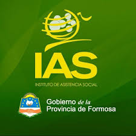

Bienvenidos al IAS
El Instituto de Asistencia Social (IAS) es el organismo de control de juegos de azar de la provincia de Formosa, comprometido con la responsabilidad socialy el bienestar de la comunidad

El Instituto de Asistencia Social (IAS) es el organismo de control de juegos de azar de la provincia de Formosa, comprometido con la responsabilidad socialy el bienestar de la comunidad
